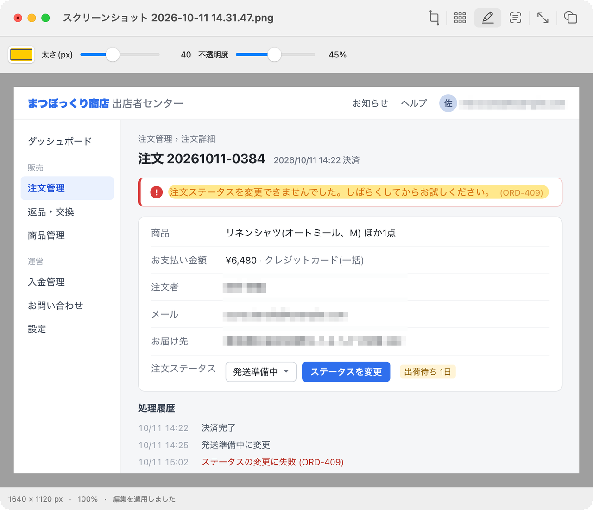

蛍光ペン
半透明のマーカーを、好きな場所に引けます。色、太さ、不透明度は自由に。
バグには蛍光ペン、メールアドレスにはモザイク、余計な部分は切り取り。スクリーンショットを送る前のあのひと手間が、Candyならすぐに終わります。
macOS 14以降 · Apple Silicon · ダウンロード 2 MB

半透明のマーカーを、好きな場所に引けます。色、太さ、不透明度は自由に。
範囲を自分で選ぶか、Apple Visionに文字の行をまとめて見つけさせるか。日本語の文字も検出できます。ボックスを確認して、一度に適用します。
四角を描いて端を合わせ、その部分だけを新しい画像にします。
比率を保ったまま縮小するか、ピクセル数を直接指定するか、90°ずつ回します。
透明な部分を単色で塗りつぶします。透明度のない形式で保存する前にどうぞ。
最初の保存は必ず別ファイルになります。取り消しは何度でもさかのぼれ、画像も文字認識もMacの外には出ません。
開ける形式 PNG · JPEG · WebP · HEIC · AVIF · GIF · TIFF · BMP · PSD · RAW など、macOSが読めるものすべて
保存できる形式 PNG · JPEG · HEIC · WebP · AVIF (macOS 26) · TIFF · GIF · BMP · JPEG 2000 · TGA
Kittyグラフィックに対応したターミナルなら、tmuxの中でも画像をその場で表示できます。candy inspectはファイルを開かずに形式とサイズ、色の情報を教えてくれます。切り取り、サイズ調整、回転、モザイク、背景の塗りつぶしはアプリと同じエンジンで処理され、新しいファイルに書き出すことも、元のファイルに直接上書きすることもできます。画面を見ながら直したいときは、candy editでアプリのウインドウを開けば、シェルはすぐに戻ってきます。
# 見る
candy photo.png
candy inspect photo.heic
# シェルを離れずに編集
candy crop photo.png --rect 20,30,300,200 -o crop.png
candy resize photo.heic --width 1200 -o small.webp
candy rotate photo.jpg --cw --in-place
candy mosaic shot.png --text -o safe.png
candy flatten logo.png --background '#ffffff' -o flat.jpg
# アプリで編集。シェルはそのまま
candy edit photo.pngbrew install --cask rath/tap/candymacOS 14以降のApple Silicon Macで動作します。Developer IDで署名し、Appleの公証を受けています。アプリ全体で5 MB未満、待機中のメモリは30 MBほど。中身はAppKitとRustだけで、Webビューは入っていません。